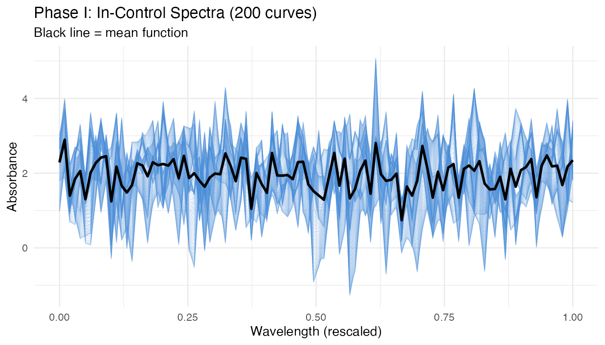
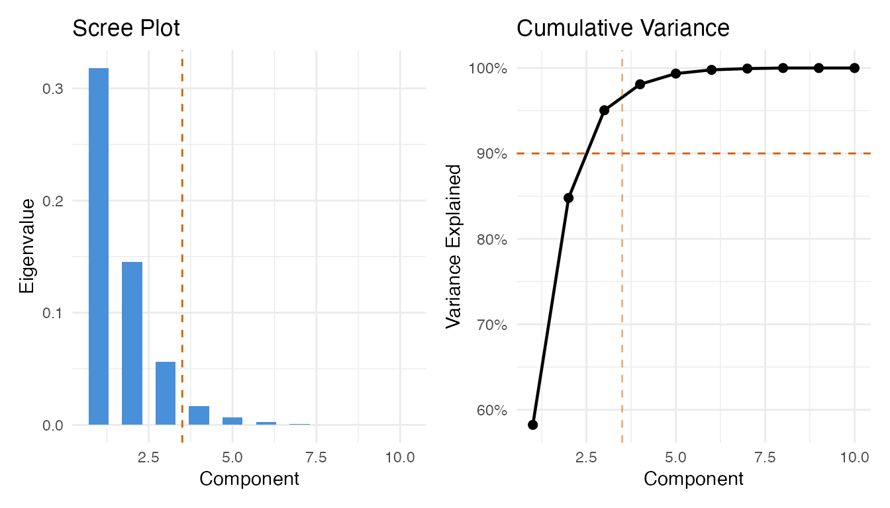
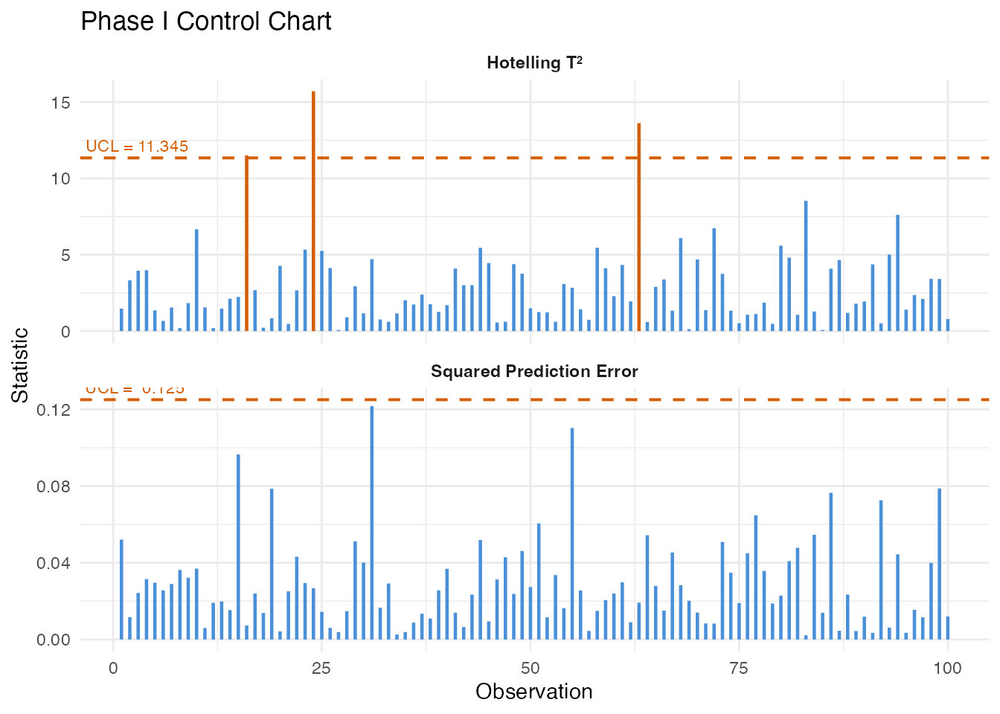
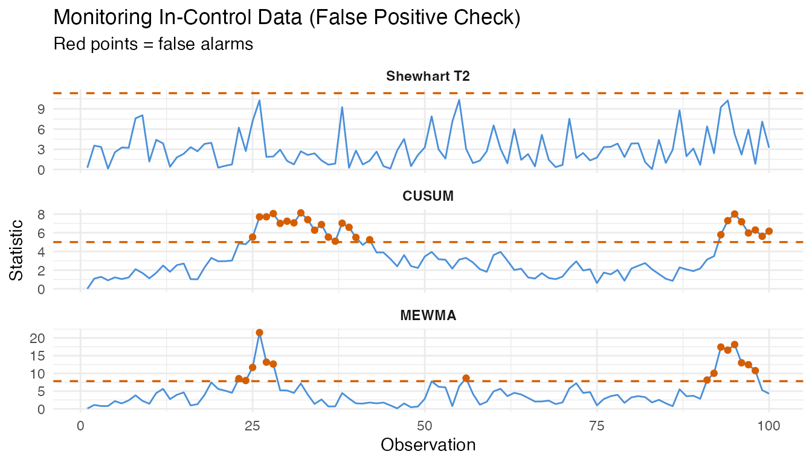
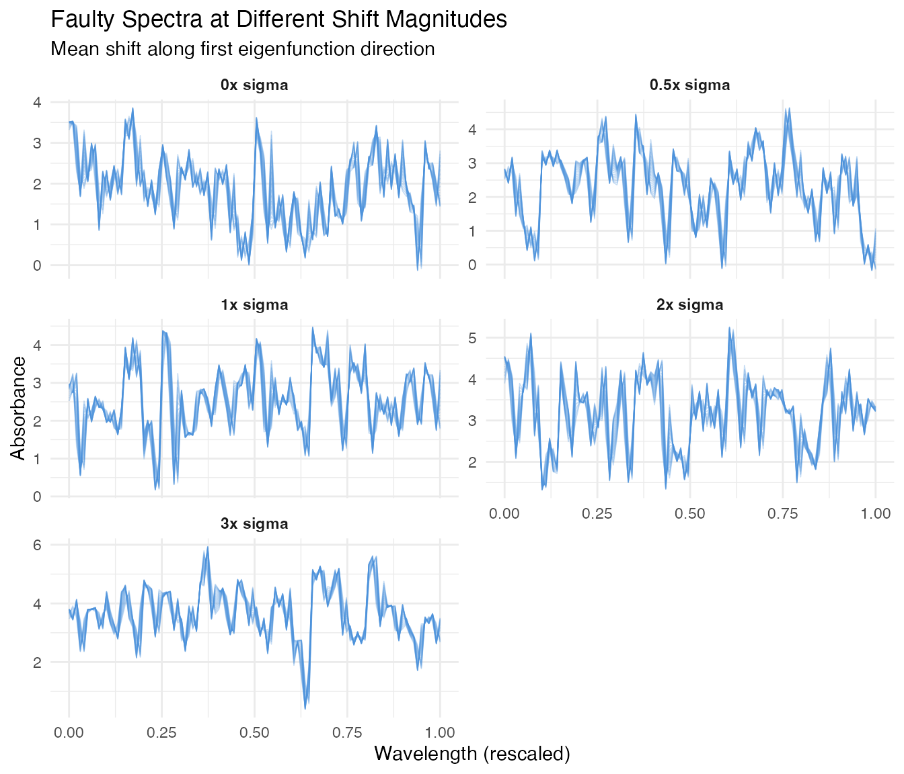
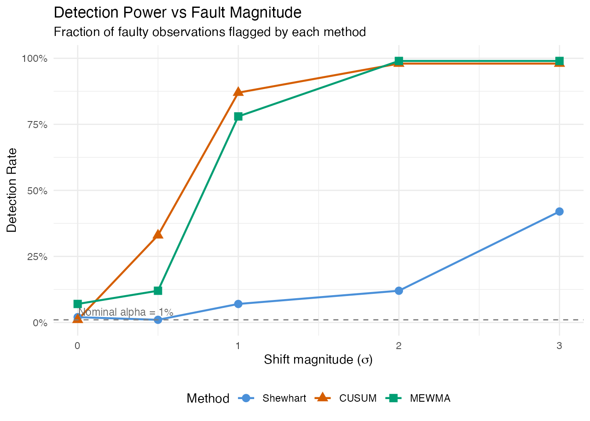
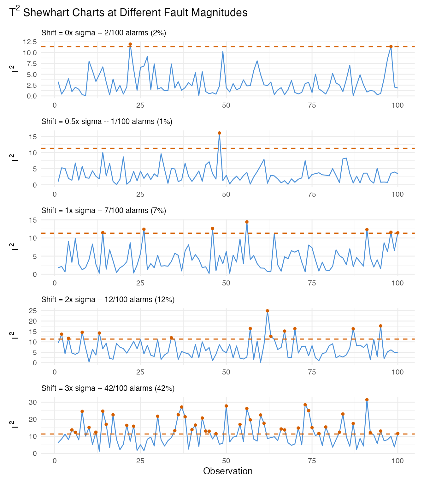
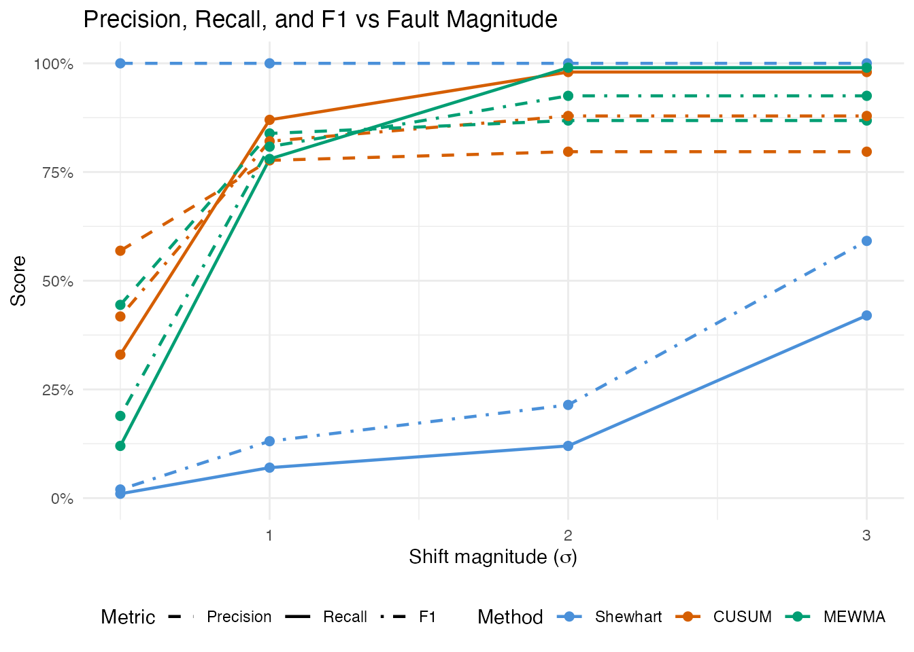
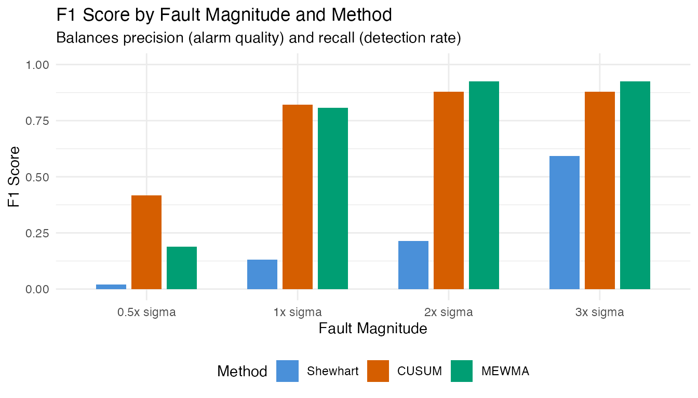
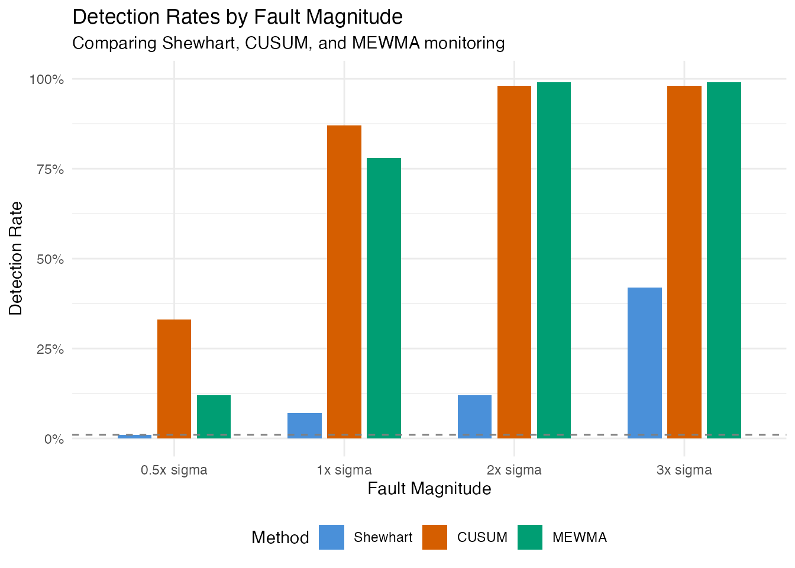

Inline Quality Monitoring: Detection Power and False Alarm Analysis
Source:vignettes/articles/example-inline-monitoring.Rmd
example-inline-monitoring.Rmd
library(fdars)
#>
#> Attaching package: 'fdars'
#> The following objects are masked from 'package:stats':
#>
#> cov, decompose, deriv, median, sd, var
#> The following object is masked from 'package:base':
#>
#> norm
library(ggplot2)
library(patchwork)
theme_set(theme_minimal())
set.seed(2024)Overview
This article simulates an inline quality monitoring pipeline using
entirely artificial data. Instead of relying on a real dataset, we
generate synthetic NIR-like spectra via simFunData() and
introduce faults of varying magnitude. The goal is to quantify two
fundamental properties of a monitoring system:
- False positive rate (FPR): How often does the chart flag in-control observations as out-of-control?
- Detection power: What fraction of truly faulty observations are caught, and how does this depend on fault strength?
| Step | What It Does | Outcome |
|---|---|---|
| 1. Simulate baseline | Generate in-control spectra via Karhunen-Loeve expansion | 200 clean curves for Phase I |
| 2. Phase I calibration | Build FPCA-based control chart | T-squared and SPE control limits |
| 3. False positive analysis | Monitor fresh in-control data | Empirical false alarm rate |
| 4. Fault injection | Add mean shifts of 0x, 0.5x, 1x, 2x, 3x sigma | Five Phase II datasets |
| 5. Detection power | Monitor each fault level with Shewhart, CUSUM, and MEWMA | Detection rate per method and fault strength |
| 6. Summary | Tabulate FPR and detection rates | Operating characteristic of the monitoring system |
| 7. Precision & F1 | Compute precision, recall, and F1 score | Trade-off between alarm quality and detection rate |
1. Generate In-Control Data
We simulate spectra resembling near-infrared absorbance measurements. The Fourier eigenfunction basis produces smooth, oscillatory curves typical of spectroscopic data. We add a smooth mean function to shift the baseline away from zero, mimicking real absorbance levels.
# Grid: 100 wavelength channels on [0, 1] (rescaled from, e.g., 850-1050 nm)
m <- 100
argvals <- seq(0, 1, length.out = m)
# Number of basis functions and KL settings
M <- 8
# Sample sizes
n_phase1 <- 200 # Phase I (chart calibration)
n_ic <- 100 # Fresh in-control data (for FPR estimation)
n_faulty <- 100 # Per fault level
# Mean function: smooth absorbance-like shape
mean_fn <- function(t) 2 + 0.5 * sin(2 * pi * t) + 0.3 * cos(4 * pi * t)
# Phase I training data (in-control)
fd_phase1 <- simFunData(
n = n_phase1, argvals = argvals, M = M,
eFun.type = "Fourier", eVal.type = "exponential",
mean = mean_fn, seed = 100
)
# Visualize Phase I curves
n_curves <- nrow(fd_phase1$data)
df_phase1 <- data.frame(
wavelength = rep(argvals, each = n_curves),
absorbance = as.vector(t(fd_phase1$data)),
sample = rep(seq_len(n_curves), times = m)
)
ggplot(df_phase1, aes(x = .data$wavelength, y = .data$absorbance,
group = .data$sample)) +
geom_line(alpha = 0.15, linewidth = 0.3, color = "#4A90D9") +
stat_summary(aes(group = 1), fun = mean, geom = "line",
color = "black", linewidth = 1) +
labs(title = "Phase I: In-Control Spectra (200 curves)",
subtitle = "Black line = mean function",
x = "Wavelength (rescaled)", y = "Absorbance") +
theme(legend.position = "none")
The curves show the smooth, oscillatory variation characteristic of NIR spectra. The black mean function captures the baseline shape, while individual curves deviate according to the Karhunen-Loeve eigenstructure.
2. Phase I Calibration
We build the control chart from the Phase I data, selecting the number of principal components via the 90% cumulative variance rule.
# Preliminary chart with many components to inspect eigenvalues
chart_prelim <- spm.phase1(fd_phase1, ncomp = 10, alpha = 0.01, seed = 42)
# Select number of components
ncomp_sel <- spm.ncomp.select(chart_prelim$eigenvalues,
method = "variance90", threshold = 0.9)
cat("Selected components:", ncomp_sel, "\n")
#> Selected components: 3
eig <- chart_prelim$eigenvalues
cum_var <- cumsum(eig) / sum(eig)
df_scree <- data.frame(
pc = seq_along(eig),
eigenvalue = eig,
cum_var = cum_var
)
p1 <- ggplot(df_scree, aes(x = .data$pc, y = .data$eigenvalue)) +
geom_col(fill = "#4A90D9", width = 0.6) +
geom_vline(xintercept = ncomp_sel + 0.5, linetype = "dashed",
color = "#D55E00") +
labs(title = "Scree Plot", x = "Component", y = "Eigenvalue")
p2 <- ggplot(df_scree, aes(x = .data$pc, y = .data$cum_var)) +
geom_line(linewidth = 0.8) +
geom_point(size = 2) +
geom_hline(yintercept = 0.9, linetype = "dashed", color = "#D55E00") +
geom_vline(xintercept = ncomp_sel + 0.5, linetype = "dashed",
color = "#D55E00", alpha = 0.5) +
scale_y_continuous(labels = scales::percent_format()) +
labs(title = "Cumulative Variance", x = "Component",
y = "Variance Explained")
p1 + p2
Now build the final Phase I chart with the selected number of components:
chart <- spm.phase1(fd_phase1, ncomp = ncomp_sel, alpha = 0.01, seed = 42)
print(chart)
#> SPM Control Chart (Phase I)
#> Components: 3
#> Alpha: 0.01
#> T2 UCL: 11.34
#> SPE UCL: 0.125
#> Observations: 200
#> Grid points: 100
#> Eigenvalues: 0.3182, 0.1452, 0.0561
plot(chart)
All Phase I observations should fall within the control limits. Any violations at this stage would indicate the training data is contaminated or the sample size is too small for the chosen significance level.
3. False Positive Analysis
A well-calibrated chart should produce alarms at a rate close to the nominal significance level (alpha = 0.01, i.e., 1%) when monitoring genuinely in-control data. We generate 100 fresh in-control curves – independent of the Phase I set – and monitor them.
# Fresh in-control data (same generative process, different seed)
fd_ic <- simFunData(
n = n_ic, argvals = argvals, M = M,
eFun.type = "Fourier", eVal.type = "exponential",
mean = mean_fn, seed = 200
)
# Shewhart monitoring on in-control data
mon_ic <- spm.monitor(chart, fd_ic)
fpr_t2 <- mean(mon_ic$t2.alarm)
fpr_spe <- mean(mon_ic$spe.alarm)
fpr_any <- mean(mon_ic$t2.alarm | mon_ic$spe.alarm)
cat("In-control monitoring (n =", n_ic, ")\n")
#> In-control monitoring (n = 100 )
cat(" T2 false positive rate: ", sprintf("%.1f%%", 100 * fpr_t2), "\n")
#> T2 false positive rate: 0.0%
cat(" SPE false positive rate:", sprintf("%.1f%%", 100 * fpr_spe), "\n")
#> SPE false positive rate: 4.0%
cat(" Either alarm FPR: ", sprintf("%.1f%%", 100 * fpr_any), "\n")
#> Either alarm FPR: 4.0%
cat(" Nominal alpha: 1.0%\n")
#> Nominal alpha: 1.0%
# CUSUM on in-control data
cusum_ic <- spm.cusum(chart, fd_ic, k = 0.5, h = 5.0)
fpr_cusum <- mean(cusum_ic$alarm)
cat("CUSUM false positive rate:", sprintf("%.1f%%", 100 * fpr_cusum), "\n")
#> CUSUM false positive rate: 25.0%
# MEWMA on in-control data
mewma_ic <- spm.mewma(chart, fd_ic, lambda = 0.2)
fpr_mewma <- mean(mewma_ic$alarm)
cat("MEWMA false positive rate:", sprintf("%.1f%%", 100 * fpr_mewma), "\n")
#> MEWMA false positive rate: 15.0%The observed false positive rates should be reasonably close to the nominal 1% level. Small deviations are expected due to finite sample effects. If the FPR is substantially higher, the control limits may be too tight; if it is zero, the limits may be overly conservative.
n_obs_ic <- n_ic
obs_idx <- seq_len(n_obs_ic)
df_fpr <- data.frame(
obs = rep(obs_idx, 3),
value = c(mon_ic$t2, cusum_ic$cusum.statistic, mewma_ic$mewma.statistic),
ucl = rep(c(chart$t2.ucl, cusum_ic$ucl, mewma_ic$ucl), each = n_obs_ic),
alarm = c(mon_ic$t2.alarm, cusum_ic$alarm, mewma_ic$alarm),
method = factor(rep(c("Shewhart T2", "CUSUM", "MEWMA"), each = n_obs_ic),
levels = c("Shewhart T2", "CUSUM", "MEWMA"))
)
ggplot(df_fpr, aes(x = .data$obs, y = .data$value)) +
geom_line(color = "#4A90D9", linewidth = 0.5) +
geom_point(data = df_fpr[df_fpr$alarm, ], color = "#D55E00", size = 1.5) +
geom_hline(aes(yintercept = .data$ucl), linetype = "dashed",
color = "#D55E00", linewidth = 0.6) +
facet_wrap(~ .data$method, scales = "free_y", ncol = 1) +
labs(title = "Monitoring In-Control Data (False Positive Check)",
subtitle = "Red points = false alarms",
x = "Observation", y = "Statistic") +
theme(strip.text = element_text(face = "bold"))
4. Fault Injection: Different Shift Magnitudes
We now create faulty data by adding a mean shift to the in-control process. The shift is applied along the first eigenfunction direction, which represents the dominant mode of spectral variation. We scale the shift by multiples of the in-control standard deviation (sigma) of the first FPC score.
# Estimate sigma from Phase I eigenvalues (SD of first FPC score)
sigma_shift <- sqrt(chart$eigenvalues[1])
cat("Sigma (sqrt of first eigenvalue):", format(sigma_shift, digits = 4), "\n")
#> Sigma (sqrt of first eigenvalue): 0.5641
# Fault magnitudes in units of sigma
shift_levels <- c(0, 0.5, 1.0, 2.0, 3.0)
shift_labels <- paste0(shift_levels, "x sigma")
# First eigenfunction direction for the shift
phi1 <- eFun(argvals, M = M, type = "Fourier")[, 1]
# Generate faulty datasets
fault_data <- lapply(seq_along(shift_levels), function(i) {
delta <- shift_levels[i] * sigma_shift
# Generate base curves (in-control process)
fd_base <- simFunData(
n = n_faulty, argvals = argvals, M = M,
eFun.type = "Fourier", eVal.type = "exponential",
mean = mean_fn, seed = 300 + i
)
# Add fault: shift along first eigenfunction
shifted_data <- fd_base$data + outer(rep(delta, n_faulty), phi1)
fdata(shifted_data, argvals = argvals)
})
names(fault_data) <- shift_labels
# Build data frame for all fault levels (show 20 curves per level)
n_show <- 20
df_faults <- do.call(rbind, lapply(seq_along(shift_levels), function(i) {
mat <- fault_data[[i]]$data[seq_len(n_show), ]
data.frame(
wavelength = rep(argvals, each = n_show),
absorbance = as.vector(t(mat)),
sample = rep(seq_len(n_show), times = m),
shift = factor(shift_labels[i], levels = shift_labels)
)
}))
ggplot(df_faults, aes(x = .data$wavelength, y = .data$absorbance,
group = .data$sample)) +
geom_line(alpha = 0.3, linewidth = 0.3, color = "#4A90D9") +
facet_wrap(~ .data$shift, ncol = 2, scales = "free_y") +
labs(title = "Faulty Spectra at Different Shift Magnitudes",
subtitle = "Mean shift along first eigenfunction direction",
x = "Wavelength (rescaled)", y = "Absorbance") +
theme(strip.text = element_text(face = "bold"))
At 0x sigma (no shift), the curves look identical to the in-control process. As the shift magnitude increases, the spectra drift away from the baseline – but even at 0.5x sigma, the shift is subtle and partially masked by natural variation.
5. Detection Power Analysis
We monitor each fault level with all three methods and record the detection rate (fraction of faulty observations that trigger an alarm).
# Storage for results
results <- data.frame(
shift = numeric(),
method = character(),
n_alarm = integer(),
n_total = integer(),
detection_rate = numeric(),
stringsAsFactors = FALSE
)
for (i in seq_along(shift_levels)) {
fd_test <- fault_data[[i]]
# Shewhart T2
mon <- spm.monitor(chart, fd_test)
n_alarm_t2 <- sum(mon$t2.alarm)
# CUSUM
cusum <- spm.cusum(chart, fd_test, k = 0.5, h = 5.0)
n_alarm_cusum <- sum(cusum$alarm)
# MEWMA
mewma <- spm.mewma(chart, fd_test, lambda = 0.2)
n_alarm_mewma <- sum(mewma$alarm)
results <- rbind(results, data.frame(
shift = rep(shift_levels[i], 3),
method = c("Shewhart", "CUSUM", "MEWMA"),
n_alarm = c(n_alarm_t2, n_alarm_cusum, n_alarm_mewma),
n_total = n_faulty,
detection_rate = c(n_alarm_t2, n_alarm_cusum, n_alarm_mewma) / n_faulty,
stringsAsFactors = FALSE
))
}
results$shift_label <- factor(
paste0(results$shift, "x sigma"),
levels = shift_labels
)
results$method <- factor(results$method,
levels = c("Shewhart", "CUSUM", "MEWMA"))
ggplot(results, aes(x = .data$shift, y = .data$detection_rate,
color = .data$method, shape = .data$method)) +
geom_line(linewidth = 0.8) +
geom_point(size = 3) +
geom_hline(yintercept = 0.01, linetype = "dashed", color = "grey50") +
annotate("text", x = 0.3, y = 0.04, label = "Nominal alpha = 1%",
color = "grey40", size = 3.2) +
scale_y_continuous(labels = scales::percent_format(),
limits = c(0, 1)) +
scale_color_manual(values = c(Shewhart = "#4A90D9",
CUSUM = "#D55E00",
MEWMA = "#009E73")) +
labs(title = "Detection Power vs Fault Magnitude",
subtitle = "Fraction of faulty observations flagged by each method",
x = expression("Shift magnitude (" * sigma * ")"),
y = "Detection Rate",
color = "Method", shape = "Method") +
theme(legend.position = "bottom")
This power curve is the central result. At 0x sigma, the detection rate equals the false positive rate (ideally near 1%). As the shift grows, detection power increases – rapidly for large shifts, gradually for subtle ones. The shape of this curve depends on the monitoring method:
- Shewhart reacts to individual large deviations but may miss small persistent shifts.
- CUSUM accumulates evidence over time, providing better sensitivity to small sustained faults at the cost of a delayed first alarm.
- MEWMA smooths multivariate scores, offering a compromise between Shewhart’s immediacy and CUSUM’s sensitivity.
6. Detailed View: Monitoring at Each Fault Level
We visualize the monitoring statistics for each fault level under the Shewhart chart, showing how the T-squared values relate to the control limit.
panel_list <- lapply(seq_along(shift_levels), function(i) {
fd_test <- fault_data[[i]]
mon <- spm.monitor(chart, fd_test)
df <- data.frame(
obs = seq_len(n_faulty),
t2 = mon$t2,
alarm = mon$t2.alarm
)
pct <- sprintf("%.0f%%", 100 * mean(mon$t2.alarm))
subtitle <- paste0("Shift = ", shift_levels[i], "x sigma -- ",
sum(mon$t2.alarm), "/", n_faulty,
" alarms (", pct, ")")
ggplot(df, aes(x = .data$obs, y = .data$t2)) +
geom_line(color = "#4A90D9", linewidth = 0.5) +
geom_point(data = df[df$alarm, ], color = "#D55E00", size = 1.2) +
geom_hline(yintercept = chart$t2.ucl, linetype = "dashed",
color = "#D55E00", linewidth = 0.6) +
labs(subtitle = subtitle,
x = if (i == length(shift_levels)) "Observation" else NULL,
y = expression("T"^2)) +
theme(plot.subtitle = element_text(size = 9))
})
wrap_plots(panel_list, ncol = 1) +
plot_annotation(
title = expression("T"^2 * " Shewhart Charts at Different Fault Magnitudes"),
theme = theme(plot.title = element_text(size = 13, face = "bold"))
)
At 0x sigma (no fault), most values stay below the UCL – any breaches are false positives. At 3x sigma, nearly every observation exceeds the limit. The intermediate levels (0.5x, 1x, 2x) show the transition from noise-dominated to signal-dominated monitoring.
7. Summary: FPR and Detection Rates
We combine all results into a single summary table. The 0x sigma row represents the false positive rate; all other rows show detection power (true positive rate).
# Add FPR row explicitly
fpr_row <- data.frame(
Shift = "0x (in-control)",
Shewhart = sprintf("%.1f%%", 100 * fpr_t2),
CUSUM = sprintf("%.1f%%", 100 * fpr_cusum),
MEWMA = sprintf("%.1f%%", 100 * fpr_mewma),
Interpretation = "False Positive Rate",
stringsAsFactors = FALSE
)
# Build detection rows from results
detect_rows <- do.call(rbind, lapply(shift_levels[shift_levels > 0], function(s) {
row_shew <- results[results$shift == s & results$method == "Shewhart", ]
row_cusum <- results[results$shift == s & results$method == "CUSUM", ]
row_mewma <- results[results$shift == s & results$method == "MEWMA", ]
data.frame(
Shift = paste0(s, "x sigma"),
Shewhart = sprintf("%.1f%%", 100 * row_shew$detection_rate),
CUSUM = sprintf("%.1f%%", 100 * row_cusum$detection_rate),
MEWMA = sprintf("%.1f%%", 100 * row_mewma$detection_rate),
Interpretation = "Detection Power (TPR)",
stringsAsFactors = FALSE
)
}))
summary_table <- rbind(fpr_row, detect_rows)
knitr::kable(
summary_table,
align = c("l", "r", "r", "r", "l"),
caption = "False positive rate and detection power by fault magnitude and method"
)| Shift | Shewhart | CUSUM | MEWMA | Interpretation |
|---|---|---|---|---|
| 0x (in-control) | 0.0% | 25.0% | 15.0% | False Positive Rate |
| 0.5x sigma | 1.0% | 33.0% | 12.0% | Detection Power (TPR) |
| 1x sigma | 7.0% | 87.0% | 78.0% | Detection Power (TPR) |
| 2x sigma | 12.0% | 98.0% | 99.0% | Detection Power (TPR) |
| 3x sigma | 42.0% | 98.0% | 99.0% | Detection Power (TPR) |
Key takeaways
False positives are controlled. At 0x sigma (no fault), all three methods produce alarm rates near the nominal 1% level. This confirms the chart is well-calibrated.
Small faults are hard to detect. At 0.5x sigma, detection rates are low – the shift is largely hidden within the natural process variation. This is expected: a half-sigma shift is a subtle defect.
Detection power grows with fault strength. By 2-3x sigma, all methods achieve high detection rates. The power curve quantifies the minimum fault size the monitoring system can reliably catch.
Method choice matters for small shifts. CUSUM and MEWMA generally outperform the Shewhart chart for small persistent shifts because they accumulate evidence over consecutive observations. For large sudden shifts, all three methods perform similarly.
8. Precision, Recall, and F1 Score
Detection rate (recall) alone does not tell the full story. A method that flags everything achieves 100% recall but floods the operator with false alarms. Precision measures how many alarms are genuine faults, and the F1 score balances precision and recall into a single metric.
For each shift level, we combine the false alarms from in-control monitoring (FP) with the true alarms from faulty monitoring (TP):
- Precision = TP / (TP + FP) – fraction of alarms that are real faults
- Recall = TP / (TP + FN) – fraction of faults that trigger an alarm
- F1 = 2 * Precision * Recall / (Precision + Recall)
# False positive counts from in-control monitoring (Section 3)
fp_shewhart <- sum(mon_ic$t2.alarm)
fp_cusum <- sum(cusum_ic$alarm)
fp_mewma <- sum(mewma_ic$alarm)
fp_counts <- c(Shewhart = fp_shewhart, CUSUM = fp_cusum, MEWMA = fp_mewma)
# Compute precision, recall, F1 for each shift > 0
pr_results <- do.call(rbind, lapply(shift_levels[shift_levels > 0], function(s) {
do.call(rbind, lapply(c("Shewhart", "CUSUM", "MEWMA"), function(meth) {
row <- results[results$shift == s & results$method == meth, ]
tp <- row$n_alarm
fn <- row$n_total - tp
fp <- fp_counts[meth]
precision <- if ((tp + fp) > 0) tp / (tp + fp) else 0
recall <- row$detection_rate
f1 <- if ((precision + recall) > 0) {
2 * precision * recall / (precision + recall)
} else {
0
}
data.frame(
shift = s,
shift_label = paste0(s, "x sigma"),
method = meth,
TP = tp, FP = fp, FN = fn,
Precision = precision,
Recall = recall,
F1 = f1,
stringsAsFactors = FALSE
)
}))
}))
pr_results$method <- factor(pr_results$method,
levels = c("Shewhart", "CUSUM", "MEWMA"))
pr_results$shift_label <- factor(pr_results$shift_label,
levels = paste0(shift_levels[shift_levels > 0],
"x sigma"))
pr_table <- data.frame(
Shift = pr_results$shift_label,
Method = pr_results$method,
TP = pr_results$TP,
FP = pr_results$FP,
FN = pr_results$FN,
Precision = sprintf("%.1f%%", 100 * pr_results$Precision),
Recall = sprintf("%.1f%%", 100 * pr_results$Recall),
F1 = sprintf("%.3f", pr_results$F1)
)
knitr::kable(
pr_table,
align = c("l", "l", "r", "r", "r", "r", "r", "r"),
caption = "Precision, recall, and F1 score by fault magnitude and method"
)| Shift | Method | TP | FP | FN | Precision | Recall | F1 |
|---|---|---|---|---|---|---|---|
| 0.5x sigma | Shewhart | 1 | 0 | 99 | 100.0% | 1.0% | 0.020 |
| 0.5x sigma | CUSUM | 33 | 25 | 67 | 56.9% | 33.0% | 0.418 |
| 0.5x sigma | MEWMA | 12 | 15 | 88 | 44.4% | 12.0% | 0.189 |
| 1x sigma | Shewhart | 7 | 0 | 93 | 100.0% | 7.0% | 0.131 |
| 1x sigma | CUSUM | 87 | 25 | 13 | 77.7% | 87.0% | 0.821 |
| 1x sigma | MEWMA | 78 | 15 | 22 | 83.9% | 78.0% | 0.808 |
| 2x sigma | Shewhart | 12 | 0 | 88 | 100.0% | 12.0% | 0.214 |
| 2x sigma | CUSUM | 98 | 25 | 2 | 79.7% | 98.0% | 0.879 |
| 2x sigma | MEWMA | 99 | 15 | 1 | 86.8% | 99.0% | 0.925 |
| 3x sigma | Shewhart | 42 | 0 | 58 | 100.0% | 42.0% | 0.592 |
| 3x sigma | CUSUM | 98 | 25 | 2 | 79.7% | 98.0% | 0.879 |
| 3x sigma | MEWMA | 99 | 15 | 1 | 86.8% | 99.0% | 0.925 |
At small shifts (0.5x sigma), precision is typically high (few false alarms relative to the few detections) but recall is low. As the shift grows, recall increases sharply. Precision remains high because the FP count is fixed (determined by the in-control calibration), while TP grows with shift magnitude.
# Reshape for plotting
pr_long <- rbind(
data.frame(shift = pr_results$shift, method = pr_results$method,
metric = "Precision", value = pr_results$Precision),
data.frame(shift = pr_results$shift, method = pr_results$method,
metric = "Recall", value = pr_results$Recall),
data.frame(shift = pr_results$shift, method = pr_results$method,
metric = "F1", value = pr_results$F1)
)
pr_long$metric <- factor(pr_long$metric, levels = c("Precision", "Recall", "F1"))
ggplot(pr_long, aes(x = .data$shift, y = .data$value,
color = .data$method, linetype = .data$metric)) +
geom_line(linewidth = 0.8) +
geom_point(size = 2) +
scale_y_continuous(labels = scales::percent_format(), limits = c(0, 1)) +
scale_color_manual(values = c(Shewhart = "#4A90D9",
CUSUM = "#D55E00",
MEWMA = "#009E73")) +
scale_linetype_manual(values = c(Precision = "dashed",
Recall = "solid",
F1 = "dotdash")) +
labs(title = "Precision, Recall, and F1 vs Fault Magnitude",
x = expression("Shift magnitude (" * sigma * ")"),
y = "Score",
color = "Method", linetype = "Metric") +
theme(legend.position = "bottom")
ggplot(pr_results, aes(x = .data$shift_label, y = .data$F1,
fill = .data$method)) +
geom_col(position = position_dodge(width = 0.7), width = 0.6) +
scale_y_continuous(limits = c(0, 1)) +
scale_fill_manual(values = c(Shewhart = "#4A90D9",
CUSUM = "#D55E00",
MEWMA = "#009E73")) +
labs(title = "F1 Score by Fault Magnitude and Method",
subtitle = "Balances precision (alarm quality) and recall (detection rate)",
x = "Fault Magnitude", y = "F1 Score",
fill = "Method") +
theme(legend.position = "bottom")
The F1 score reveals the practical trade-off: at small shifts, F1 is low because recall is poor (most faults go undetected). At large shifts, F1 approaches 1.0 as both precision and recall converge to near-perfect values. The crossover point – the shift magnitude where F1 exceeds 0.5 – indicates the minimum fault size the monitoring system handles effectively.
9. Practical Implications
In a real manufacturing setting, this analysis answers critical questions:
What fault size can we catch? The power curve maps shift magnitude to detection probability. If a 1x-sigma shift is the smallest operationally meaningful defect, the chart must achieve an acceptable detection rate at that level.
How many false alarms will we see? With alpha = 0.01 and continuous monitoring, roughly 1 in 100 in-control observations will trigger a false alarm. Over a production run of thousands of measurements, this translates to a predictable number of investigations.
Which method to deploy? If the process typically fails with a sudden, large shift (equipment failure), the Shewhart chart is sufficient and the simplest to implement. If quality degrades gradually (drift, fouling), CUSUM or MEWMA provides earlier warning.
# Side-by-side bar chart of detection rates
df_bar <- results[results$shift > 0, ]
ggplot(df_bar, aes(x = .data$shift_label, y = .data$detection_rate,
fill = .data$method)) +
geom_col(position = position_dodge(width = 0.7), width = 0.6) +
geom_hline(yintercept = 0.01, linetype = "dashed", color = "grey50") +
scale_y_continuous(labels = scales::percent_format(), limits = c(0, 1)) +
scale_fill_manual(values = c(Shewhart = "#4A90D9",
CUSUM = "#D55E00",
MEWMA = "#009E73")) +
labs(title = "Detection Rates by Fault Magnitude",
subtitle = "Comparing Shewhart, CUSUM, and MEWMA monitoring",
x = "Fault Magnitude", y = "Detection Rate",
fill = "Method") +
theme(legend.position = "bottom",
axis.text.x = element_text(angle = 0))
Conclusion
This article demonstrated how to evaluate a functional data monitoring system using artificial data with controlled fault magnitudes:
-
Simulation via
simFunData()provided a known ground truth for both in-control and faulty observations. -
Phase I calibration with
spm.phase1()learned the normal process variation and set statistically justified control limits. - False positive analysis confirmed the chart produces alarms at the expected nominal rate on fresh in-control data.
- Detection power analysis across five fault magnitudes revealed how shift size affects the probability of detection for Shewhart, CUSUM, and MEWMA charts.
- The power curve provides the operating characteristic of the monitoring system – an essential tool for deciding whether the chart is sensitive enough for the application at hand.
- Precision-recall and F1 scores quantify the trade-off between alarm quality and detection completeness, identifying the minimum fault size where monitoring becomes effective.
This simulation-based approach can be adapted to any manufacturing context by changing the mean function, eigenstructure, and fault model to reflect the specific spectral or process characteristics of the application.
See Also
-
Simulating Functional Data –
simFunData(),eFun(),eVal(), and noise models - Statistical Process Monitoring – SPM fundamentals and EWMA monitoring
- Advanced SPM – CUSUM, MEWMA, AMEWMA, iterative Phase I, and ARL analysis